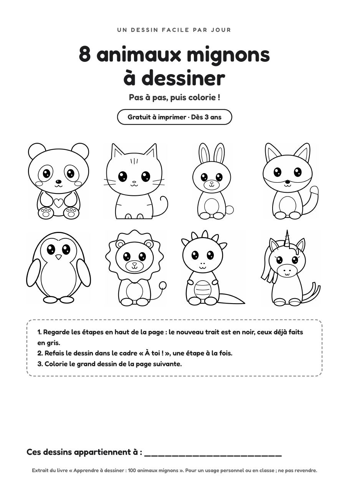
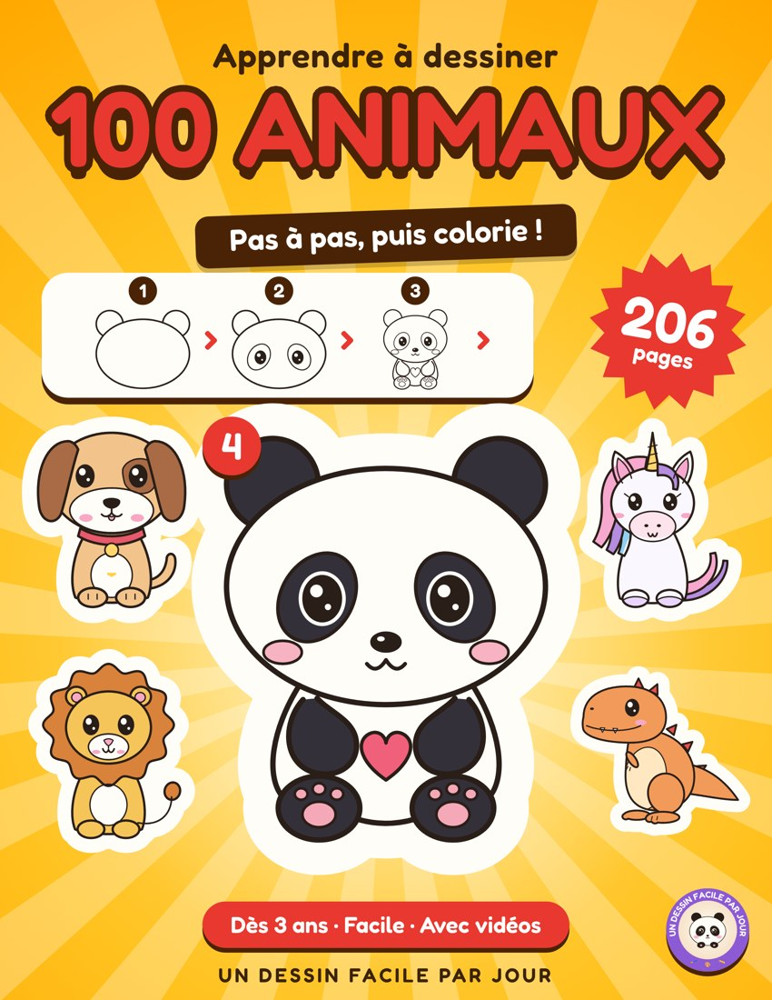

UN DESSIN FACILE PAR JOUR
8 animaux mignons à dessiner
Pas à pas, puis colorie ! PDF gratuit à imprimer, dès 3 ans.

Télécharger le PDF gratuit
18 pages A4 · 3 Mo · sans inscription
- Pour chaque animal : les étapes en image, un cadre « À toi ! » pour le refaire, puis un grand dessin à colorier.
- Panda, chat, lapin, renard, pingouin, lion, dinosaure et licorne.
- Un crayon à papier suffit pour commencer.

Il en reste 92 dans le livre complet
100 animaux pas à pas : ferme, forêt, savane, océan, dinosaures.
206 pages · dès 3 ans · une idée cadeau pour Noël.
Voir le livre sur Amazon
206 pages · dès 3 ans · une idée cadeau pour Noël.